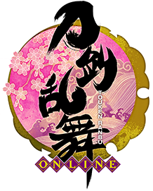

刀剑乱舞

刀剑乱舞
《刀剑乱舞》是由日本游戏开发及运营商DMM与游戏制作公司Nitro+合作开发的女性向网页游戏，于2015年1月14日发行。游族网络宣布，知名二次元游戏《刀剑乱舞-ONLINE-》 页游与手游的中国大陆地区独家发行权已被授予游族网络。于2016年10月正式推出系列动漫。
游戏背景
本作是由 DMM Games 制作，Nitroplus 负责角色和脚本的「刀剑育成」模拟游戏。玩家可以一边驰骋在历史上的战场，一边育成以名刀/名枪男性角色拟人化而成的「刀剑男士」，打造最强的部队。当然，玩家必须以根据战略编组队伍，另外还有美丽的图片和豪华的声优阵容为游戏增色，是可以让人享受收集刀剑男士乐趣的一部作品。
游戏还请到了前野智昭、石川界人、鸟海浩辅、近藤隆、木村良平、榎木淳弥、兴津和幸、柿原彻也等著名实力派声优助阵。
本丸
游戏的主界面，可视为玩家的“大本营”据点。 本丸显示的刀剑男士为玩家第一部队的部队长，背景可以通过“景趣”功能进行更换。玩家可以通过点击刀剑男士收听人物台词，也可以从左下角的“表示”查看四支部队的活动情况，方便玩家查看部队远征归还时间等信息。点击左侧的“本丸”字样，可隐藏所有的功能键以便于观察本丸全景。